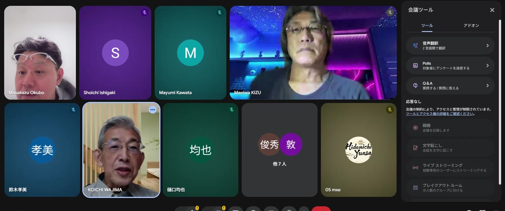
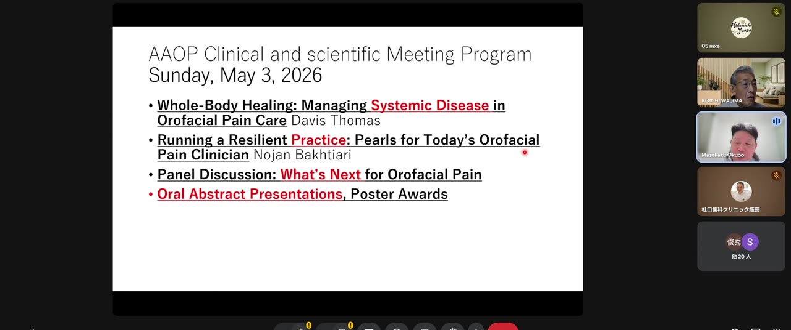
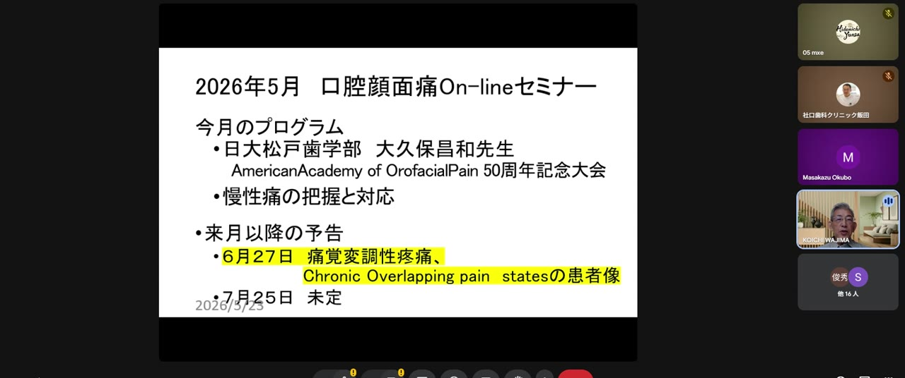
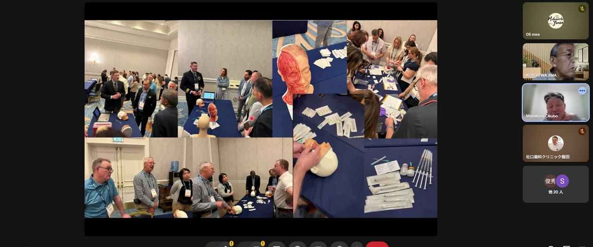
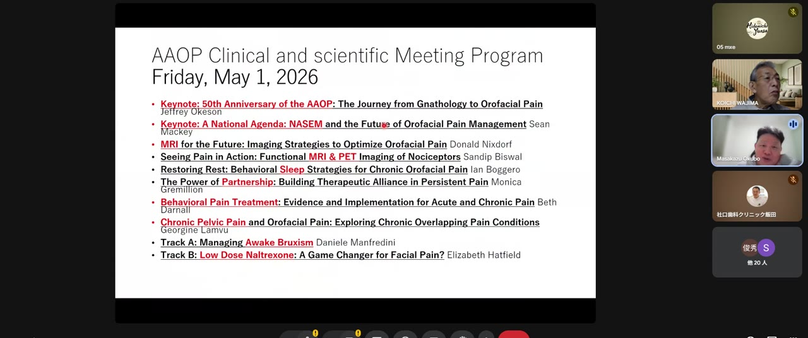
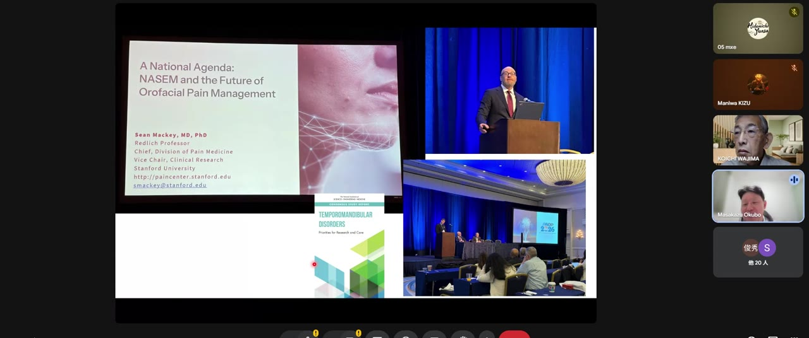
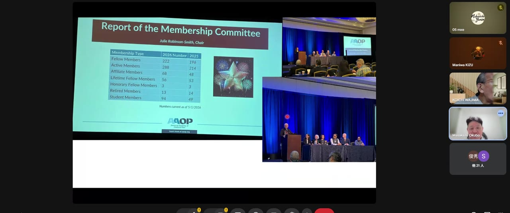
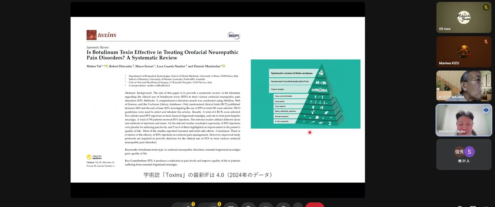
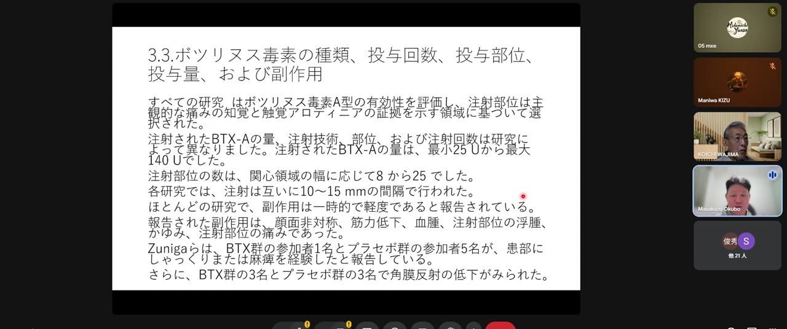

00:00-01:04
AAOP 50周年大会報告
Orlandoで開催されたAAOP Annual Clinical and Scientific Meeting 2026の報告です。現地訪問、会場、プログラム、ポスター、ハンズオン、ボツリヌス毒素の話題が中心です。口腔顔面痛が歯科局所の問題から、睡眠、慢性痛、神経科学、AI、行動医学まで広がっていることが示されます。
2026年5月 口腔顔面痛 On-line セミナー
2時間23分18秒の動画を、切り出し画像と一緒に読み進められるように再構成した完全解説版です。前半はAAOP 50周年記念学術大会の参加報告、後半は大久保昌和先生・和嶋浩一先生を中心とした慢性口腔顔面痛の討論です。各画像について、「何が映っているか」「そこで何が語られているか」「臨床でどう使うか」までつなげて説明します。

00:00-01:04
Orlandoで開催されたAAOP Annual Clinical and Scientific Meeting 2026の報告です。現地訪問、会場、プログラム、ポスター、ハンズオン、ボツリヌス毒素の話題が中心です。口腔顔面痛が歯科局所の問題から、睡眠、慢性痛、神経科学、AI、行動医学まで広がっていることが示されます。
01:08-01:35
大久保昌和先生、和嶋浩一先生らの名前が表示され、慢性口腔顔面痛をどう理解するかという討論に入ります。COPCsや慢性痛分類の話題が出て、単一の歯科疾患として痛みを見る限界が浮かびます。
01:36-02:23
痛みの定義、侵害受容性疼痛、神経障害性疼痛、痛覚変調性疼痛、ICOP、COPCs、PTSD、身体感覚増幅、Top-down / Bottom-up、管理プロトコルまで進みます。臨床家が患者説明に使える枠組みとして読むのが重要です。

00:00-00:12
50周年という節目は、口腔顔面痛が「特殊な痛み」から「専門診療領域」へ成熟してきたことを示します。米国ではOrofacial Painが歯科の専門分野として制度化され、AAOPは臨床、教育、研究、専門医制度の中心的な学会として機能しています。

00:06-00:18
Prof. Dorrit Nitzan、Hadassah School of Dental Medicine、Hebrew Universityが紹介される場面は、口腔顔面痛が口腔外科、顎顔面外科、歯科麻酔、疼痛医学、神経科学と重なっていることを示します。研究者や臨床家との交流は、単に人脈ではなく、診療文化の共有です。

00:24-00:34
画像にはハンズオンや教育場面が含まれます。口腔顔面痛診療では、面接、触診、神経学的評価、筋・関節評価、咬合装置、薬物療法、注射療法、心理教育など、複数の技能を組み合わせます。知識だけでも、手技だけでも不十分です。

00:34-00:43
学会プログラムは、その分野の現在地を示す地図です。AAOPでは、TMD、睡眠、慢性痛、薬物療法、頭痛、神経障害、AI、セルフマネジメントなどが同じ会議の中で扱われます。これは、口腔顔面痛を「口の中だけの問題」として扱わない姿勢です。

00:43-00:50
ポスター発表は、症例、治療反応、診断基準、教育、患者アウトカムが集まる場所です。口腔顔面痛のように個人差が大きい領域では、単一の大規模研究だけでなく、日常臨床から出る小さな疑問を積み上げることが重要になります。

00:52-00:57
ボツリヌス毒素Aは、咀嚼筋の過活動を抑える薬剤として知られますが、慢性口腔顔面痛ではそれだけでは足りません。神経終末からの伝達物質放出、神経原性炎症、末梢性感作、中枢側の痛み処理への波及が議論されます。

00:57-01:00
2023年のsystematic reviewは、口腔顔面領域の神経障害性疼痛に対するBoNT-Aを検討しています。効果の可能性は示されますが、研究ごとの投与量、注射部位、対象疾患、評価時期が異なります。ここで必要なのは、結論を単純化せず、どの患者に、どの方法で、どの目的で使うかを考えることです。

01:00-01:04
投与単位、注射部位、回数、間隔、副作用が一覧化される場面です。これは「使える薬剤」という希望と同時に、「まだ標準化が十分でない」という注意点を示します。慢性痛診療では、治療法の期待値を患者と共有し、過剰な期待や反復介入を避ける必要があります。

01:08-01:20
後半では、慢性口腔顔面痛をTMDや歯痛だけでなく、COPCsの文脈で見る流れに入ります。COPCsは、TMD、線維筋痛症、過敏性腸症候群、片頭痛、慢性疲労、慢性腰痛などが同じ患者に重なりやすいことを示す概念です。

01:36-01:45
IASPの痛みの定義に近い説明が示されます。痛みは組織損傷の量だけで決まるものではなく、不快な感覚かつ情動の体験です。この一文を理解すると、慢性口腔顔面痛の患者に「異常がない」と言うことが、なぜ説明にならないかが見えてきます。

01:45-01:52
急性痛は組織を守る警報として働きます。一方で慢性痛は、警報装置そのものが過敏になり、損傷の治癒後も痛みが残る状態です。ここを理解しないと、医療者は痛い部位へ処置を重ね、患者は「まだ原因が残っている」と考え続けてしまいます。

01:52-02:00
原因不明、一次性、特発性、COPCs、身体化、身体感覚増幅など、複数の概念が並びます。これらは患者をラベル付けするためではなく、何を評価し、どの治療資源につなげるかを決めるための地図です。

02:00-02:06
ICOPは、歯・歯周組織、筋・筋膜、顎関節、脳神経、頭痛に似た顔面痛、特発性口腔顔面痛を整理します。慢性口腔顔面痛の患者を診るとき、歯科医師はこの分類を使うことで、不要な処置を減らし、適切な紹介と説明を行いやすくなります。

02:06-02:11
PTSDや外傷体験が痛みに関係するという話は、痛みが気のせいだという意味ではありません。脅威記憶、自律神経、睡眠、過覚醒、筋緊張、注意の固定が、痛み処理を過敏にするという意味です。歯科治療そのものが脅威刺激になっている患者もいます。

02:11-02:17
Bottom-upは末梢から上がる感覚入力、Top-downは脳からの予測、注意、感情、記憶による修飾です。慢性口腔顔面痛では、局所入力が小さくても、脳の警報システムが強く反応すれば痛みは増幅します。逆に、安心感や理解が増えると痛みが下がることがあります。

02:17-02:20
身体感覚増幅は、身体の小さな感覚が強く、不快で、危険なものとして感じられやすい状態です。これは患者の性格の問題ではなく、注意、予測、不安、過去の痛み経験、神経系の過敏化が重なった結果として考えます。

02:20-02:23
終盤では、慢性痛をどう管理するかが臨床課題になります。慢性口腔顔面痛では、痛みを完全に消すことだけを目標にすると、患者も医療者も行き詰まりやすくなります。食べる、話す、眠る、働く、外出する、安心して治療を受けるという機能回復を、痛みの軽減と並行して目標にします。